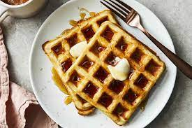

Waffles

Description
Light, fluffy, and delicious -- waffles are a breakfast classic.
Ingredients
- 2 whole eggs
- Flour
- Whole milk
- Vegetable oil
- 1 tbsp of sugar
- Baking powder
- Pinch of salt
- Vanilla
- Cooking spray
Steps
- Make the batter: Whisk the eggs, then add the flour, milk, and oil. Whisk in the sugar. Stir in the remaining ingredients.
- Make the waffles: Pour the batter onto the hot, prepared waffle iron. Cook until golden brown and repeat with the remaining batter.